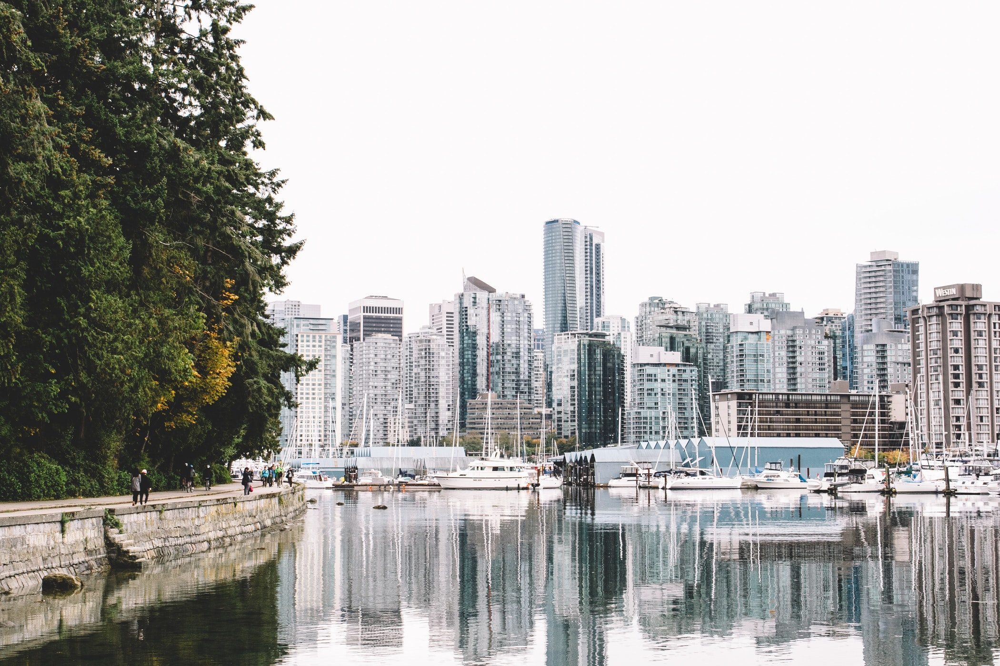

Our mission
WatLock’s primary goal is to a build safe and inviting atmosphere that encourages members to share their ideas and learn new skills. Every member should take pride as we design and build technology for the future of space exploration.
Space Engineering!
WatLock is proud to be one of the few student design teams at the University of Waterloo working on a large-scale Space Engineering project. To be able to accomplish our ambitious goal, we have to think as space engineers. We are a team that shares a burning passion; space exploration!

Start-up environment!
WatLock was founded in 2018, making it one the youngest student design team at the University. Our close-packed, fast-growing team breathes in a start-up environment. You will most likely know everyone in the team and be part of a welcoming community. We have a flat organizational structure - meaning your ideas are always going to be heard by us!
Team socials!
Every term, WatLock is dedicated to organize at least two team socials. From board games to eat-outs, VR arcade to the cinemas, bowling to pubs, this is a great opportunity to build a stronger relationship between team members but also a great time to de-stress and have fun! Nothing listed interest you? Then we are open to your suggestions for our next team social!

Go to Vancouver!
As Project Airlock Challenge | Phase II approaches, get ready to pack your space underwears and represent the team at Vancouver, BC!
Adam Powell was one of the team members that went to Vancouver for Project Airlock Challenge | Phase I, and he said,
"Vancouver was truly an amazing experience and a beautiful city. I would highly recommend everyone to visit one day!"